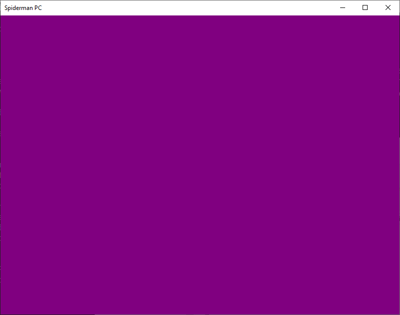
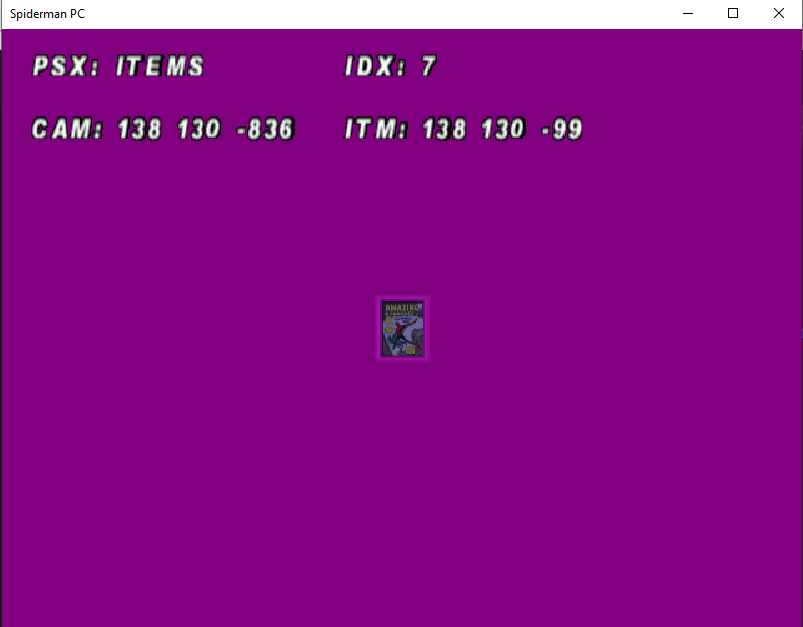

Spider-Man (Neversoft) decompilation project Progress Checkpoint - September 2024
This is the third entry on my progress checkpoint of the Spider-Man decompilation project. The entries are independent of each-other and can be read in any order. If this post piqued your interest I'd recommend checking the July and May entries. The repository for the project can be found here and you can see me progress live on my YouTube channel here.
My work on the decompilation until August had been solely focused on the game logic and data structures. None of it was done on the game engine side, which means there was no renderer, input handling or file loading. Therefore I set my target on getting this systems working so that I can get an actual visual output from the project.
High level overview
As of the 26th of September, compared to the last checkpoint 640 commits have been made so we're now at 1340 commits! Here are the key metrics:
- @Ok 1030 (+523)
- @NotOk 187 (+20)
- @BIGTODO 57 (-6)
- @MEDIUMTODO 261 (+205)
- @SMALLTODO 293 (+243)
I still haven't identified all the functions that exist in the game and need to be done. Regardless, using the same formula from the last checkpoint I can say the progress is between 25% and 34%. In the following sections I'll outline the main accomplishments and learnings.
File Loading
The first system to tackle was file loading as I've had previous experience hooking into it to load files directly from disk - video showcase.
All the game's contents are stored in two files: data.pkr and movie.pkr. PKR is a container format used by the Dreamcast and PC ports of the game whose contents can be compressed. By decompiling the PKR related methods I've come to realize that my previous blog post about the PKR file format is incomplete. In the post, I describe the field compressed as only having two possible values:
0x00000002: means the file entry is Zlib compressed0xFFFFFFFE: means the file entry is not compressed
This is correct, but the field is actually an index for a table of decompression methods.
- 0: BIBD (no clue)
- 1: WIBD (no clue)
- 2: Zlib
- 3: BZip
The game uses Zlib 1.1.3 which can be conveniently acquired on the Zlib fossils index. Fun fact: the next version of Zlib, 1.1.4, only came 4 years later. The reason I didn't want to upgrade is that I wanted to keep the number of variables to a minimum. Additionally, it still builds straight out of the box on modern operating systems and using modern compilers which cannot be said for other software from that era (never managed to build GCC 2.x with a modern GCC without any patches).
Interestingly, I could not use the Zlib built with the Microsoft's Visual C++ 6 on the more modern Visual C++ due to lacking SAFESEH which is a feature that came later. For that reason in the repository I have safesehzlib.lib and zlib.lib.
A library built in debug mode
Most PKR handling routines present in the executable were part of an external library, which was most likely called LIBPKR. This is deduced from the fact the main type exposed is LIBPKR_HANDLE. A factor that strongly hints at the routines being external to the game source tree is that their assembly is quite verbose. The function epilogues and prologues are lengthy and take care of the frame pointer. Omitting the frame pointer is one of the first optimizations and one of the simplest way to get easy performance gains (less code, the better).
The library also includes logic to append files to PKR containers, but its logic is never triggered. Therefore I didn't even attempt to decompile these methods as they bring little to no value to making the game playable.
Armed with the fact there might be a PKR handling library floating around I started to look into other games that use the PKR container - Tony Hawk Pro Skater 2 and Matt Hoffman's Pro BMX - to see if there's more information or accidentally included documentation but no luck. All these games use Neversoft's Big Guns Engine and were ported to PC by LTI Gray Matter. Pro BMX was the only game not developed by Neversoft, but by Shaba Games (the studio that later made Spider-Man: Web of Shadows). It seems Activision saw Neversoft's success and started to push its other studios to use the same engine.
Still, it's unclear who developed the PKR format since the format only shows up in the ports and not in the original game. The version I'm decompiling is a port of a port; first it was ported to the Dreamcast by Treyarch (that made all Spider-Man movie tie-in games and Ultimate Spider-Man) and then ported to the PC by LTI Gray Matter. The reason why I don't believe it was Treyarch is that the first Spider-Man movie game was released the very next year and uses a different container format. Although knowing who created the format doesn't help much, having a standalone version could've been useful.
If you're curious to see how this turned out, you can take a look at pkr.cpp
Rendering - DirectX
It's hard to explain how much I loathed the idea to have to integrate with DirectX 8 (the game uses Direct3D7 for some reason). Not only I lacked the experience but the version I was integrating with was ancient which makes it harder to find help. With other areas of the game, having error in the decompilation leads to incorrect behaviour or a crash, both areas I'm used to handling. The issue with rendering is that an error will most likely cause no output. I do know the basics of computer graphics, but mostly theory which is not helpful when all you get is a black screen.
Surprisingly, the integration went pretty smoothly. First I downloaded the DirectX 8 SDK from archive.org. At the time I didn't go with the DirectX 8.0a because it came out 7 months before the PC release of the game. From what I could gather online the differences are small and mainly affect DirectInput regressions which I could live for the time being. Luckily for me, it seems skipping was a wise choice as the top result for DirectX 8.0a on archive.org seems to be a virus.
IDA also has a few of vtable definitions for the IDirect* interfaces which made my life so much easier. On the other hand, it lacks the enum definitions and status codes definitions. For that I relied on MagnumDB, a database where you can search for any magic number and it'll list all matching macros or enums. Sadly it doesn't seem to decompose bit masks, for that I relied heavily on the DirectX header files and MSDN documentation.
Implementation of the layer that integrates with DirectX went pleasantly well, like for file loading I was able to cut some corners and prioritize the core funtionality. In this case, I cut all logic related to "low graphics" or "psx mode". Previously, it was known the PC version could load the model files from the PSX game and that data.pkr contains a lowres/ directory with the PSX models. A few years a go I accidentally found out that the game under very specific conditions will fallback into software rendering and to the lower poly models from the PSX era - video here. Due to the specificity of this case I left it out for the time being.
16bpp or DIE!
Since implementation had gone so well, the rendering gods decided to throw a challenge at me.
I had just finished the code that instantiates the render surfaces and was ready to jump into actual 2D and 3D rendering related code. Before I proceeded I had to make sure the initialization does not fail, as any non-success return code will cause a exit(). I boot the game and.... it closes. Debugging the issue showed that the decomp was quitting after getting a DXERR_UNSUPPORTED error code from SetDisplayMode. That was weird, as right before the game calls EnumDisplayModes to acquire all possible ones, why would it be failing?
It fails when setting the video mode to 640x480x16bpp but all the enumerated video modes are 32bpp! According to the game's code if before the SetDisplayMode call, the global variable that holds the bpp value is set to zero it will default to 16. Manually adjusting this value to 32 "fixed it" but I was not happy so I dug deeper. I wanted to know where did that global value was set. The value came from a registry key which my system did not have. So how does the original game manage to setup the display mode?
Like my re-implementation it attempts to set the mode to 640x480x16bpp, but succeeds! More debugging later the only difference I could note was that my re-implementation only listed 32bpp modes while the original listed both 16bpp and 32bpp for every resolution. There was absolutely no difference in the function calls but they yielded different results. Then an idea came to mind, what if I enable reduced color mode for my executable?
It works as expected! Now listing both 16bpp and 32bpp, but the original game doesn't require this mode.. I uncheck the mode, boot the game and it still works. From this moment now on the 16bpp display modes were always being enumerated. To this day I still don't know why checking and unchecking the compatibility mode made it work, but I believe Windows limits apps from using reduced color modes and only after your application is whitelisted it can access them. I even asked Silent about this behaviour and he said he did experience it in the past but never dug deeper. His theory is that it's some kind of quirk with Window's Desktop Window Manager and the fact fullscreen is emulated nowadays.
First render output
Having the core DirectX logic integrated in the game, it was time to put it to the test. And here's the result:

Here's a link to my live reaction. The reason I'm so impressed by it working is that not only it's my first time using DirectX but it just worked first try. The chosen color is also relevant for the decompilation project. A couple years ago a community member called AvengersAssemble developed tooling that reignited interest into the modding scene, most notability a tool to unpack and repack the level scripts. Sadly, he has vanished. One of the things he brought to life was the existance of a model preview mode that's included both in the Windows and Mac versions of the game.
By patching a check or forcing specfic bit on a value it'll go into this mode. Here's how it looks like:

Personally, recreating this model preview will be a huge milestone in the project. As its a stripped down version of the rendering with all the different targets on display - solid color rendering, 3D model rendering and text rendering. As of the time of writing the article I'm in the process of doing the text rendering. Let's see what I'll have to show by the next checkpoint!
Custom Memory management
The game being originally from the PSX had its own memory management system, which the ports inherited (it also contains a system for handles). This was a system I wanted to target early and forget because it was the back-bone of all memory allocations; the base class that all classes inherit from has its new operator overloaded with it.
I was "done" with it in early May - link. But there was something that I couldn't shake off, the code there was horrendous and made absolutely no sense. It was full of bit-wise operations and it didn't seem normal, but since my project was generating code that closely matched the original I didn't bat an eye. A month later I was working on a different system and realized the the memory handles were actually 8 bytes and not 4. This becomes even more relevant when you realize the function that makes handles returns the full object - SHandle Mem_MakeHandle(void*). This meant my decompilation was wrong and "closely matching assembly" did not suffice. I quickly fixed that function and moved on, but the sentiment other parts of the memory management could be wrong was brewing.
Getting the first render was amazing and I wanted to move into font rendering. But before I tackled it I had to make sure the memory management was done as I did not want to build the system half blind and only test it when fully assembled. I then started the refactor work on mem.cpp. Having more experience relying on the Tony Hawk Pro Skater 2 symbols I started to label the global variables and things started to make some sense - FirstFreeBlock, HeapDefs, LowMemory - but the weird bitwise operations persisted. It was when working on Mem_Init that something changed.
The following line of code:
pAllFreeMem->ParentHeap = pAllFreeMem->ParentHeap & 0xF ^ (16
* ((HeapBottom << 28) - (unsigned int)pAllFreeMem + v4 + 0xFFFFFE0));
In my version, after some refactoring (mostly renaming variables) compiled as such:
pNewFreeBlock->Next = (SRealBlockHeader*)((reinterpret_cast<u32>(pNewFreeBlock->Next) & 0xF) ^
((v4 - HeapBottom - 32) << 4));
Somehow adding 0xFFFFFE0 turned into subtracting 32. There are some instances where the compiler will replace an addition with the appropriate subtraction but this was not the case.
For some reason the compiler was looking at the code and rewriting it, which did not happen before. I tried to force the compiler to spit the same assembly as before but I was not capable, additionally I did not want to undo my refactor job.
Next day, I get to my job and go on Godbolt and start playing with the expression and get the following reproduction - link:
int subtract_thirty_two(int x)
{
return ((x - (x << 28) + 0xFFFFFE0) << 4) >> 4;
}
It does substract 32, but only works up to 0x08000020. So only works reliabily up to 28 bit numbers. But how did the original developers do it and why? With all the bitwise operations I started to think that some bits could have special meaning and their attempt to preserve them yielded these overly complicated operations. When I got home I revisited the THPS 2 symbols for this data structure SBlockHeader. I run dumpsym.exe and get the following:
$0 Def class=Struct type=StructDef size=8 name=SBlockHeader
$0 Def class=Bitfield type=Int size=4 name=ParentHeap
$4 Def class=Bitfield type=UInt size=28 name=Size
$4 Def class=StructMember type=StructDef(Pointer) size=8 dims=[] tag=SBlockHeader name=Next
It's bitifields! It also explains why Ghidra loaded the symbols incorrectly and set the structure size to 40 instead of 8. The loader was interpreting the bitfield size as the size of the field in bytes instead of bits!
struct SNewBlockHeader
{
i32 ParentHeap: 4;
u32 Size: 28;
SBlockHeader* Next;
};
With this new definition of the structure I rewrote the offending line of code as such:
pNewFreeBlock->Size = ((v4 - HeapBottom - 32));
As you can see it's just simple subtraction and it does get compiled to that bitwise operation galore I showed before. What's happening is that Size is stored in the high 28 bits of the number, so any operation must ensure the low 4 bits of ParentHeap are preserved. Having this knowledge made the rest of the process much easier, sadly both IDA and Ghidra seem to lack proper bitfield support so most operations had to be deduced manually. Not a huge deal considering this only happens in this very specific file and bitfields are not that common of use pattern.
More compiler compiler behaviours
In this section, I document more Microsoft Visual C++ 6 compiler behaviours that I learned along the way.
Inline only works within the same file
In retrospect, this sounds obvious as inlining is something that happens at compile time and not link time (might not be the case with more modern compilers and Link Time Optimization). I stumbled upon this conclusion by accident. One of my functions was not matching because the callee was not inlined, but in other places it was inlined. That's when I realized all other calls were under the same file and I probably put my function in the wrong file. This was eye opener as now I could spend less time looking for non-inlined version of functions if I knew they're called from a different file.
Inline cut-off
If a functions calls enough inlined functions there's a point where the compiler will stop inlining and just start making regular calls. My theory is that there's a inline depth or function size that it stops make sense to keep increasing the size.
This happens in Bit_Init.
gBitServer->RegisterSlot(reinterpret_cast<void**>(&TextBoxList), DisplayTextBoxList);
gBitServer->RegisterSlot(reinterpret_cast<void**>(&FlatBitList), DisplayFlatBitList);
gBitServer->RegisterSlot(reinterpret_cast<void**>(&Linked2EndedBitListLeftover), DisplayLinked2EndedBitListLeftover);
gBitServer->RegisterSlot(reinterpret_cast<void**>(&PixelList), DisplayPixelList);
gBitServer->RegisterSlot(reinterpret_cast<void**>(&PolyLineList), DisplayPolyLineList);
gBitServer->RegisterSlot(reinterpret_cast<void**>(&GPolyLineList), DisplayGPolyLineList);
gBitServer->RegisterSlot(reinterpret_cast<void**>(&QuadBitList), DisplayQuadBitList);
gBitServer->RegisterSlot(reinterpret_cast<void**>(&ChunkBitList), DisplayChunkBitList);
gBitServer->RegisterSlot(reinterpret_cast<void**>(&GlowList), DisplayGlowList);
gBitServer->RegisterSlot(reinterpret_cast<void**>(&GlassList), DisplayGlassList);
gBitServer->RegisterSlot(reinterpret_cast<void**>(&GLineList), DisplayGLineList);
gBitServer->RegisterSlot(reinterpret_cast<void**>(&SpecialDisplayList), DisplaySpecialDisplayList);
Starting at the call to register QuadBitList, it doesn't inline RegisterSlot anymore. Since my implementation for RegisterSlot was matching the original then Bit_Init body also stopped inlining at QuadBitList and also matched.
Then there's Init_KillAll. It calls DeleteList on a series of linked lists. It walks the list freeing each entry, my re-implementation was not matching but the behaviour was the same.
This means that this excerpt:
DeleteList(MechList);
DeleteList(CameraList);
DeleteList(BaddyList);
DeleteList(ControlBaddyList);
DeleteList(EnvironmentalObjectList);
DeleteList(BackgroundList);
DeleteList(PowerUpList);
DeleteList(BulletList);
DeleteList(SuspendedList);
DeleteList(MiscList);
DeleteList(WebList);
Is built different in my version. On the original DeleteList seems to have been written in a really strange way. It seems to use for loops and keep track of state in a really convuluted way that I managed to get close to, but opted for the simplified version due to being much more readable. Since my implementation is more succinct it means all those calls got inlined, but on the original game the call to free MiscList and WebList are not inlined.
Look! Some dead-code
When comparing the code I'm writing with the original one I first compare the pseudo-code and then go into the assembly level. I'm a big fan of IDA's graph view as it makes it extremely easy to isolate the non-matching parts of the code. During my experience I've come across a few cases where the pseudo-code matches but when I go into the disassembly there's more to the story.
Crate_Destroy
This is the first one I remember and the one that caught me off guard. It's a recursive function that has depth control (10 to be precise). Strangely I couldn't see any recursive calls which is not strange per say. I've dealt with inlined recursive calls, which cause a knot in the brain when trying to reason about it. Luckily I have the PowerPC version, which from what I've seen so far does not inline any calls and has been a godsend when dealing with these cases. Still, there's no recursive call in this version.
It's a short and succinct function so it was quite simple to recreate. Pseudo-code looked okay but when I digged into the disassembly I found a whole chain of branches that ended with the recursive call. IDA was optimizing it out when generating the pseudo-code, same thing for Ghidra. In the end I got help from Dezgeg in the decomp.me discord server:
shr ax, 0x18
test ax, ax
jz further
; recursive call here
further:
Somehow the original code tricked the compiler into shifiting 24 bits in a 16 bit register. Most importantly it's a logical shift, which means the register is fully cleared so the result is always 0. That's why IDA and Ghidra were able to optimize that portion, it's trivial to evaluate. Regardless, I still included that dead-code in my project. The tricky part was convincing the compiler not to optimize it!
Improper filtering of display modes
DirectX 7 has this pattern where you query it for something and it pass a callback function and context. This is used in cases such as enumeration of display modes, where ideally the context is used to maintain a list of valid candidates.
Decompiling the callback for display mode enumeration there was another piece of dead-code.
if ((pDesc->ddpfPixelFormat.dwFlags | DDPF_RGB) == 0)
{
return TRUE;
}
Regardless of the value of dwFlags OR'ing with any value that's non-zero will always yield a non-zero value. Thus, it's a glorified if (false).
My guess is that it was supposed to be an arithmetic AND &, instead of the OR |. As a way of filtering modes that are not RGB. Like the previous case I included it in the project.
Bogus sign extension
When decompiling Font::heightBelowBaseline and Font::heightAboveBaseline there was this snippet that amused me.
movsx eax, al
cmp eax, 0x000000FF
jz further
; some code here
further:
The jump is never taken because there is no way of sign extending an 8-bit register and the result being 0x000000FF. Here's the proof:
- Since all most-significant bits are zero, then it means the original 8-bit number must have its most-significant bit also set to zero which limits the value to
0x7F - If the most-significant bit of the 8-bit number was set then the result would be
0xFFFFFF00 | (8-bit number)which is not the case.
Therefore there's no valid 8-bit number that satifies these conditions then it's dead-code. Nonetheless, I've managed to get something as close as possible to a match with:
i32 c = pStr[i];
if (c != 255) // c gets promoted to an integer, causing the extension
{
/* code */
}
I tried over an hour to get the functions to match - stream here - and failed and in the end I left a note for future self to beware of those functions. The original code was written in such a way that even the compiler must've struggled to understand what's going on.
Scope of variables declared in for-loops statements
This older version of the compiler has this quirk that variables declared on the for expression will be assigned to the parent scope.
for (int i = 0; i < 255; i++)
{
/* code */
}
for (int i = 0; i < 40; i++) // Compilation failure since i is already declared
{
/* more code */
}
This one is a double whammy since it forces me to either declare the loop variable in the outside scope or just use different names for each index iterator with the addition of making my code more error prone.
for (int i = 0; i < 255; i++)
{
/* code */
}
for (int k = 0; k < 10; k++)
{
myarray[i] = 0; // completely valid but an obvious array out-of-bounds write
}
On the other hard, since I also build the code on other platforms using modern compilers they are able to catch this slip-ups quite easily. It's important to make clear that this only affects variables declared in for(...) and not inside the scope so collisions are not that frequent but do happen.
Trust no global memory access
As outlined in the previous post the MSVC compiler muddies the boundaries of variables in global memory. On the other hand the PowerPC version of the game, which uses GCC, preserves more the boundaries.
Here's an example using a simplified snippet from PCGfx_SetRenderParameter - link:
if (...)
{
assert(arg >= 0);
assert(arg <= 9);
SetBlendMode(blendModes[arg]);
}
else if (...)
{
assert(arg >= 10);
assert(arg <= 11);
// example 1
SetFilterMode(blendModes[arg]);
// or
// example 2
SetFilterMode(*((int*)&random_global_variable + arg));
}
What's going on here? The actual code looks like this:
int blendModes[10];
int filterModes[2];
if (...)
{
assert(arg >= 0);
assert(arg <= 9);
SetBlendMode(blendModes[arg]);
}
else if (...)
{
assert(arg >= 10);
assert(arg <= 11);
SetFilterMode(filterModes[arg - 10]);
}
Microsoft's Visual C++ compiler is extremely reluctant at doing arithmetic with the array index, so it rather change the base address to always use arg as the array index.
You'd get something akin to example 1 if the arrays are contiguous but if they aren't then you'd get example 2.
Closing thoughts
The project is coming along very nicely and a big reason for it is prototype_spitter.py - link. After the last post, it was getting annoying to manually create function stubs and headers and hard to find what parts of the code I should focus on. This little script outputs stubs with proper TODO type - SMALLTODO, MEDIUMTODO and BIGTODO - calculated based on the function size.
This made the code more grepable which reduces the cognitive load of constantly alternating from decompiler to editor.
My two main goals until the end of the year are finishing the rendering and adding tests. The rendering goal will be attained when the model preview is working as in the original game. The tests I'm still split into what I'll do. I was thinking about unit tests but the original game relies too heavily on global memory to make this convenient. Recently I've been thinking more about a symbolic execution engine. Instead of proving that that functions are the same through a theorem solver it'll just assess that for the same inputs it yields the same outputs. The symbolic engine has advantages such as being easier on different operating systems and architectures. When I'm not using my desktop I use a laptop running Alpine Linux so being able to run the test suite there would be a big bonus.
Both of these two goals will definitely bring up interesting challenges which I'm excited to tackle. Let's see what I can share by the end of the year!
Annex - rant on lazy journalism
It sucks to have your work misinterpreted to the general audience. Specially when there are publications/people with large a platform spreading misinformation. I was first exposed to it when I made the stem player emulator but this time it was worse. A brazillian "journalist" (quotes are necessary) made a Twitter post announcing to the world that a Spider-Man PS1 decompilation is in the works! Currently 16% done and PC port should be expected soon and attached a video of gameplay from an emulator. It was then picked up by Twitter account "Pirat_Nation" that translated to english. That's when it became even more popular. The responses were a shitshow but mostly focused on the fact that decompiling the PS1 game was dumb since there was already a PC port. Well duh, that's what I'm already doing. Bonus guest appearance for those who instructed me to "just recompile the N64 game". I managed to get both posts taken down, not by DMing the posters (because they left me on read) but by openly calling them on their bullshit.
It's even more surreal to have people reach out to me and ask whether I've seen this "other" decompilation project. There's no other project, just spidey-decomp.